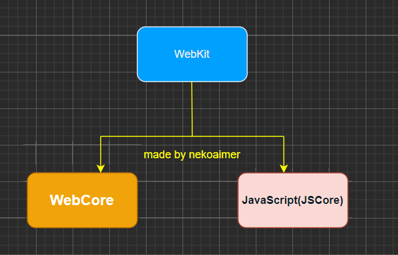
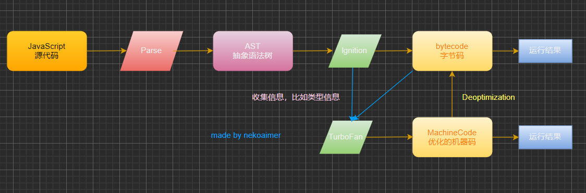
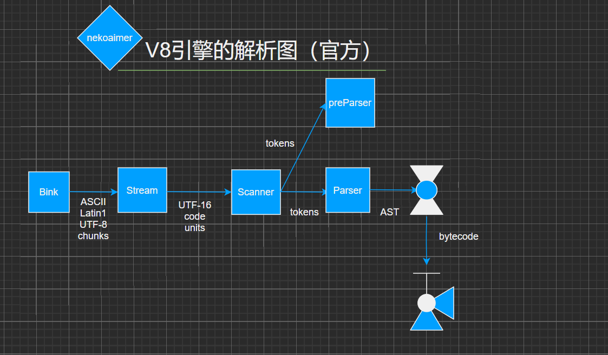
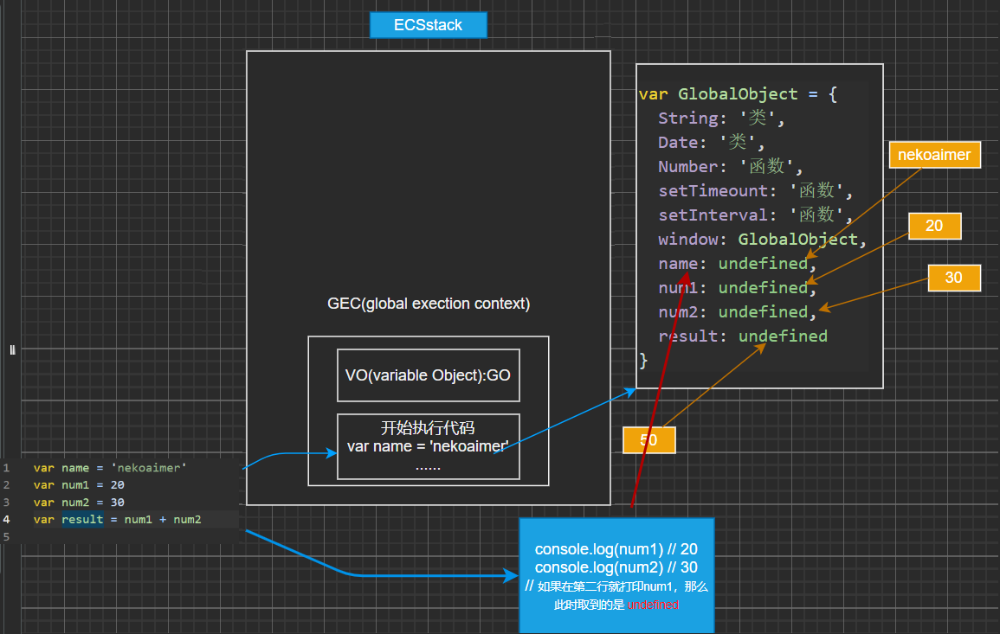
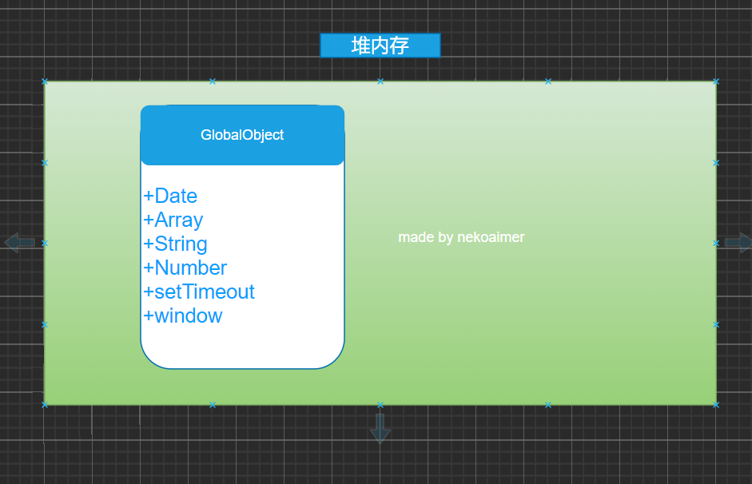
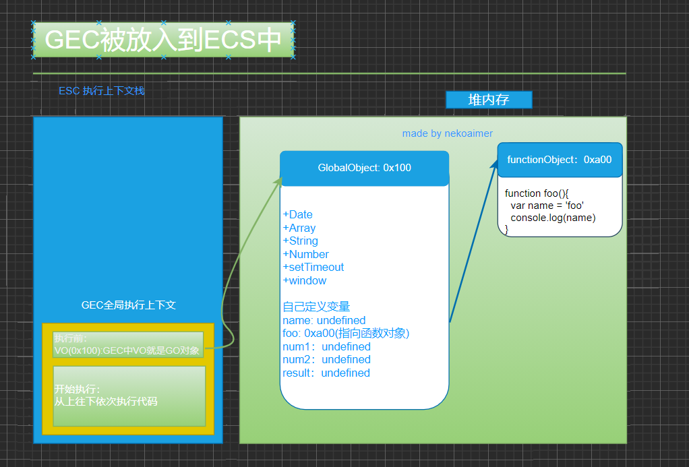
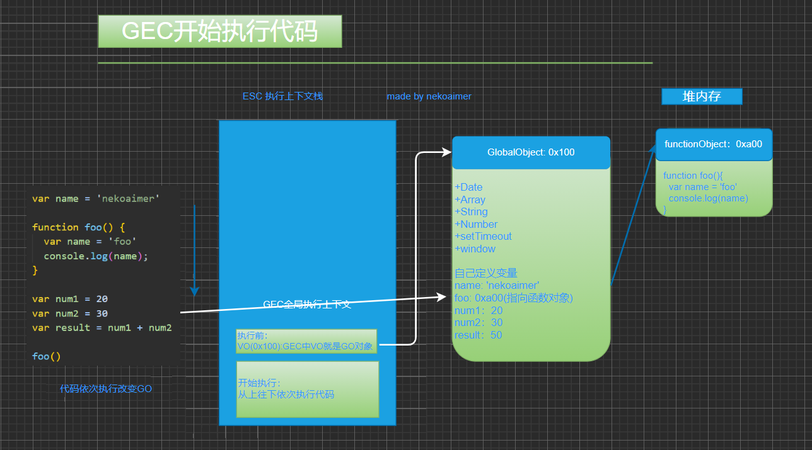
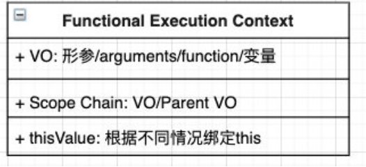
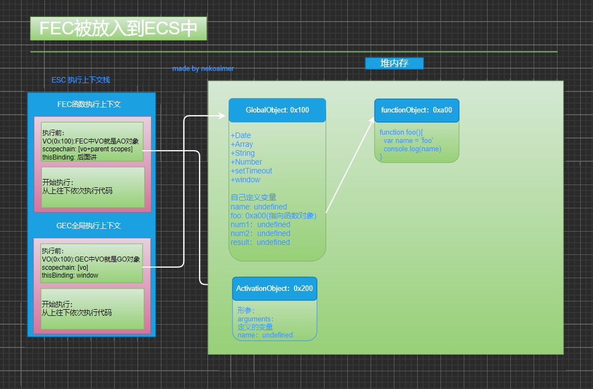

# 认识 JavaScript 引擎
为什么需要 JavaScript 引擎？
- 我们说过，高级的编程语言都是需要转成最终的机器指令来执行的；
- 事实上我们编写的 JavaScript 无论你交给浏览器或者 Node 执行，最后都是需要被 CPU 执行的；
- 但是 CPU 只认识自己的指令集，实际上是机器语言，才能被 CPU 执行；
- 我们需要 JavaScript 引擎帮助我们将 JavaScript 代码翻译成 CPU 指令来执行；
比较常见的 JavaScript 引擎：
- SpiderMonkey：第一款 JavaScript 引擎，由 Brendan Eich 开发（JavaScript 作者）；
- Chakra：微软开发，用于 IT 浏览器；
- JavaScriptCore：WebKit 中的 JavaScript 引擎，Apple 公司开发；
- V8：Google 开发的强大 JavaScript 引擎，也帮助 Chrome 从众多浏览器中脱颖而出；
- 别称：
- 排版引擎（layout engine）
- 浏览器引擎（browser engine）
- 页面渲染引擎（rendering engine）
- ......
# 浏览器内核和 JS 引擎的关系
- WebCore：负责 HTML 解析、布局、渲染等等相关工作；
- JavaScriptCore：解析、执行 JavaScript 代码；
- 在小程序中编写的 JavaScript 代码就是被 JSCore 执行的？

另一个强大的 JavaScript 引擎就是 V8 引擎。
# V8 引擎的原理
官方对 V8 引擎的定义：
- V8 时用 C++ 编写的 Google 开源高性能 JavaScript 和 WebAssembly 引擎，它用于 Chrome 和 Node.js。
- 它实现 ECMAScript 和 WebAssembly，并在 Windows 7 或更高版本，macOS 10.12 + 和使用 x64，IA-32，ARM 或 MIPS 处理器的 Linux 系统上运行。
- V8 可以独立运行，也可以嵌入到任何 C++ 应用程序中。

# V8 引擎的架构
- V8 引擎本身的源码非常复杂，大概有超过 100w 行 C++ 代码，通过了解它的架构，我们可以知道它是如何对 JavaScript 执行的：
- Parse 模块会将 JavaScript 代码转换成 AST（抽象语法树），这是因为解释器并不直接认识 JavaScript 代码；
- 如果函数没有被调用，那么是不会被转换成 AST 的；
- Parse 的 V8 官方文档：https://v8.dev/blog/scanner
- Ignition 是一个解释器，会将 AST 转换成 ByteCode（字节码）
- 同时会收集 TurboFan 优化所需要的信息（比如函数参数的类型信息，有了类型才能进行真实的运算）；
- 如果函数只调用一次，Ignition 会执行解释执行 ByteCode；
- Ignition 的 V8 官方文档：https://v8.dev/blog/ignition-interpreter
- TurboFan 是一个编译器，可以将字节码编译为 CPU 可以直接执行的机器码；
- 如果一个函数被多次调用，那么就会被标记为热点函数，那么就会经过 TurboFan 转换成优化的机器码，提高代码的执行性能；
- 但是，机器码实际上也会被还原为 ByteCode，这是因为如果后续执行函数的过程中，类型发生了变化（比如 sum 函数原来执行的是 number 类型，后来执行变成了 string 类型），之前优化的机器码并不能正确的处理运算，就会逆向的转换成字节码；
- TurboFan 的 V8 官方文档：https://v8.dev/blog/turbofan-jit
# V8 执行的细节
那么 JavaScript 源码时如何被解析（Parse 过程）的呢？
-
Bink 将源码交给 V8 引擎，Stream 获取道源码并且进行编码转换；
-
Scanner 会进行词法分析 （lexical analysis），词法分析会将代码转换成 tokens；
-
接下来 tokens 会被转换成 AST 树，经过 Parser 和 PreParser：
- Parser 就是直接将 tokens 转成 AST 树结构；
-
PreParser 称之为预解析，为什么需要预解析呢？
- 这是因为并不是所有的 JavaScript 代码，在一开始时就会被执行。那么对所有的 JavaScript 代码进行解析，必然会影响网页的运行效率；
- 所有 V8 引擎就实现了 Lazy Parsing（延迟解析）的方案，它的作用是将不必要的函数进行预解析，也就是只解析暂时需要的内容，而对函数的全量解析是在函数被调用时才会进行；
- 比如我们在一个函数 outer 内部定义了另一个函数 inner，那么 inner 函数就会进行预解析；
-
生成 AST 树后，会被 Ignition 转成字节码（bytecode），之后的过程就是代码的执行过程。

# JavaScript 全局代码执行过程
var name = 'nekoaimer' | |
var num1 = 20 | |
var num2 = 30 | |
var result = num1 + num2 | |
/* | |
1.JavaScript 代码在被解析时，V8 引擎内部会创建一个对象（GlobalObject -> go），会将需要的属性放在里面。 | |
2. 运行代码 | |
2.1.v8 为了执行代码，v8 引擎内部会有一个执行上下文栈 (Execution Context Stack,ECStack)(函数调用栈) | |
2.2. 因为我们执行的是全局代码，为了全局代码能够正常的执行，需要创建 全局执行上下文 (Global Execution Context)(全局代码需要被执行时才会创建) | |
*/ | |
var GlobalObject = { | |
String: '类', | |
Date: '类', | |
Number: '函数', | |
setTimeount: '函数', | |
setInterval: '函数', | |
... | |
// 在这个对象里面有一个重要的属性 window，指向当前的对象 | |
window:GlobalObject, | |
// 会将上面的属性也放在全局对象 但因为代码没有执行，没有赋值所以是 undefined | |
name: undefined, | |
num1: undefined, | |
num2: undefined, | |
result: undefined | |
} | |
//window.window 无论怎样都是指向自己 | |
console.log(window === window.window.window.window) // true |

# 初始化全局对象
- js 引擎会在执行代码之前，会在堆内存中创建一个全局对象：Global Object（GO）
- 该对象 所有的作用域（scope）都可以访问；
- 里面会包含 Date、Array、String、Number、setTimeout、setInterval 等等；
- 其中还有一个 window 属性指向自己；

# 执行上下文栈（调用栈）
- js 引擎内部有一个执行上下文栈（Execution Context Stack，简称 ECS），它是用于执行代码的调用栈。
- 那么现在它要执行谁呢？执行的是全局的代码块：
- 全局的代码块为了执行会构建一个 Global Execution Context（GEC）；
- GEC 会 被放入到 ECS 中 执行；
- GEC 被放入到 ECS 中里面包含两部分内容：
- 第一部分：在代码执行前，在 parser 转成 AST 的过程中，会将全局定义的变量、函数等加入到 GlobalObject 中，
- 但是并不会赋值；
- 这个过程也称之为变量的作用域提升（hoisting）
- 第二部分：在代码执行中，对变量赋值，或者执行其他的函数；


# 遇到函数如何执行？
-
在执行的过程中执行到一个函数时，就会根据函数体创建一个函数执行上下文（Functional Execution Context，
-
简称 FEC），并且压入到 EC Stack 中。
-
FEC 中包含三部分内容：
- 第一部分：在解析函数成为 AST 树结构时，会创建一个 Activation Object（AO）：
- AO 中包含形参、arguments、函数定义和指向函数对象、定义的变量；
- 第二部分：作用域链：由 VO（在函数中就是 AO 对象）和父级 VO 组成，查找时会一层层查找；
- 第三部分：this 绑定的值

